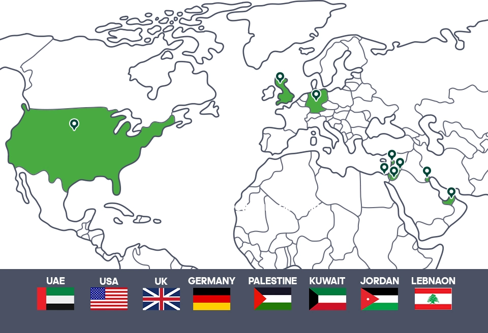
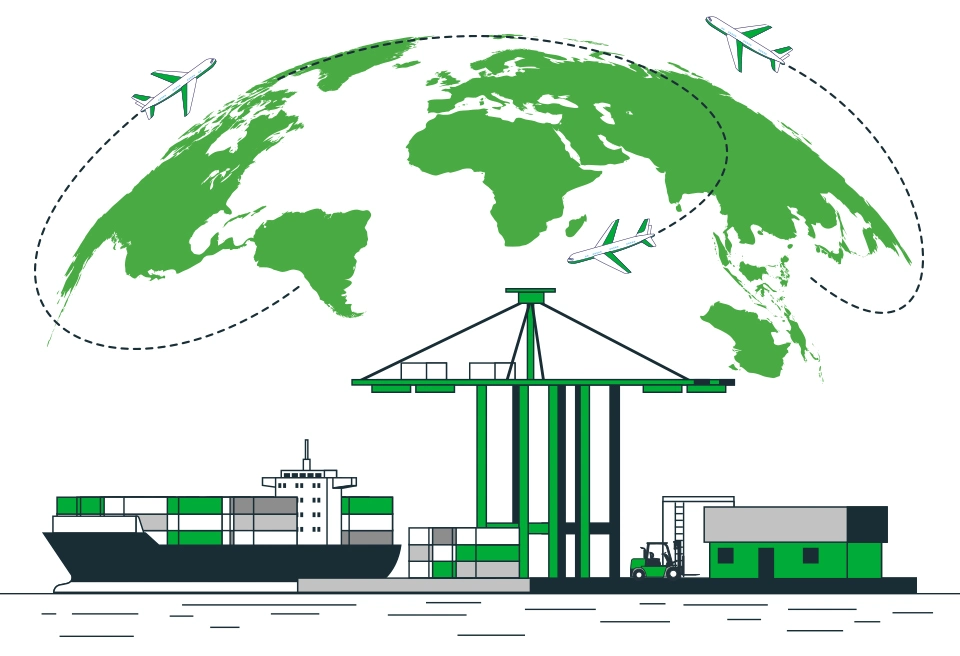
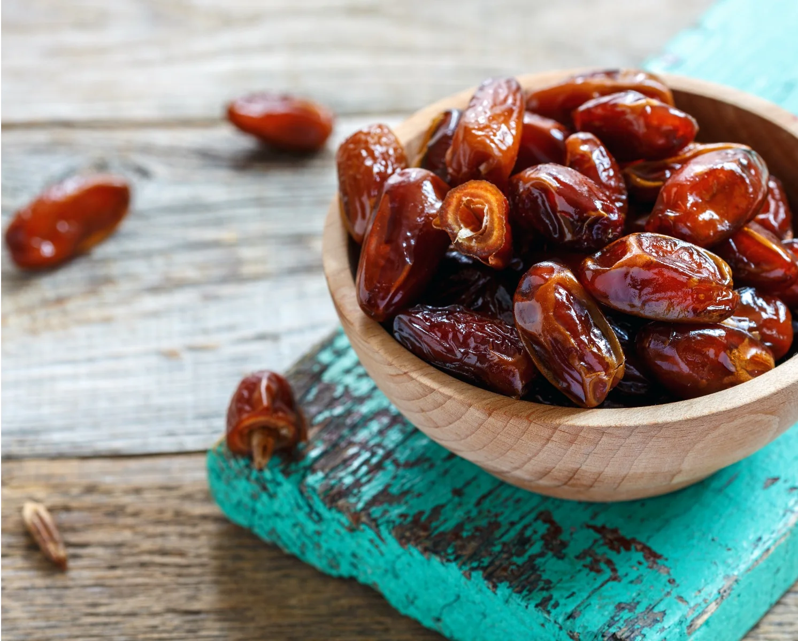
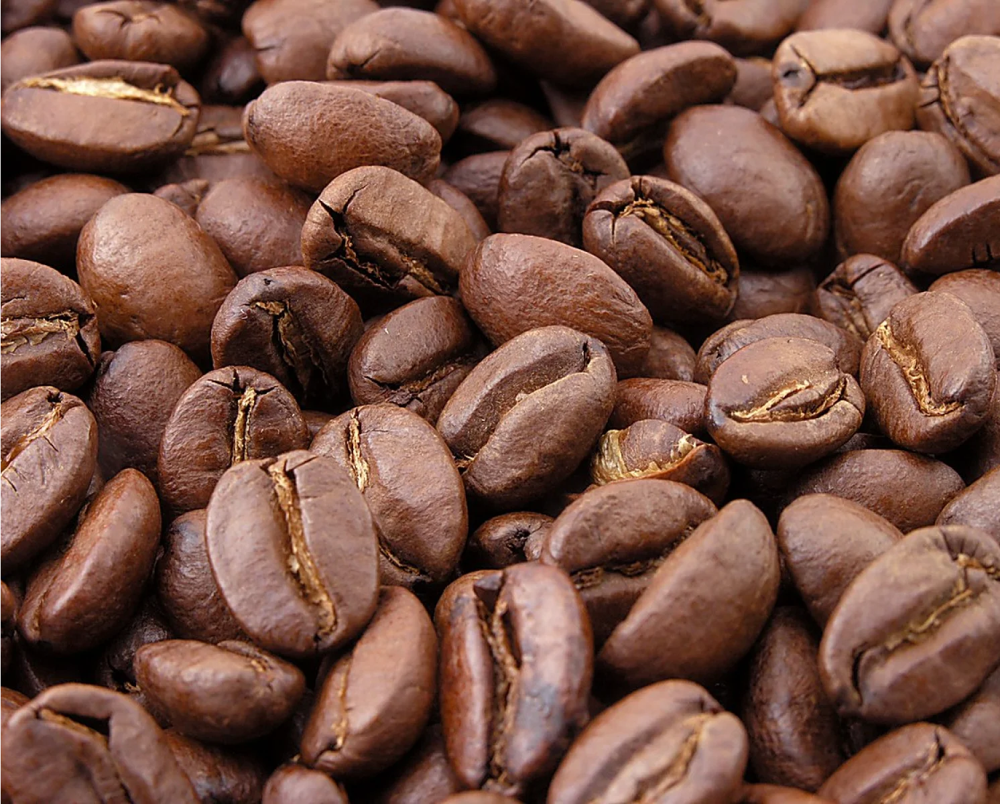
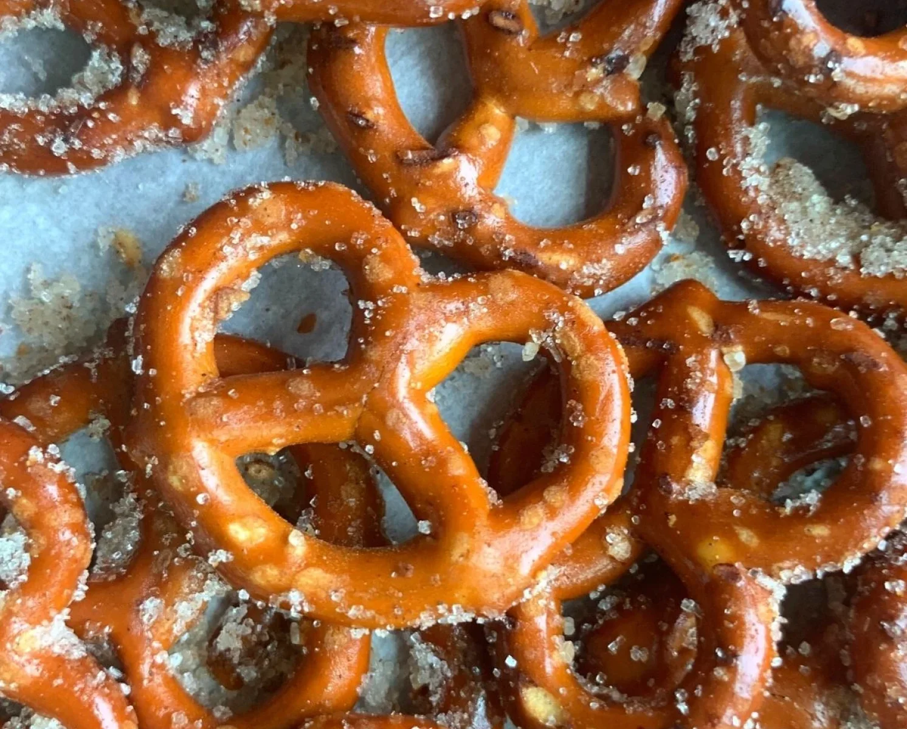
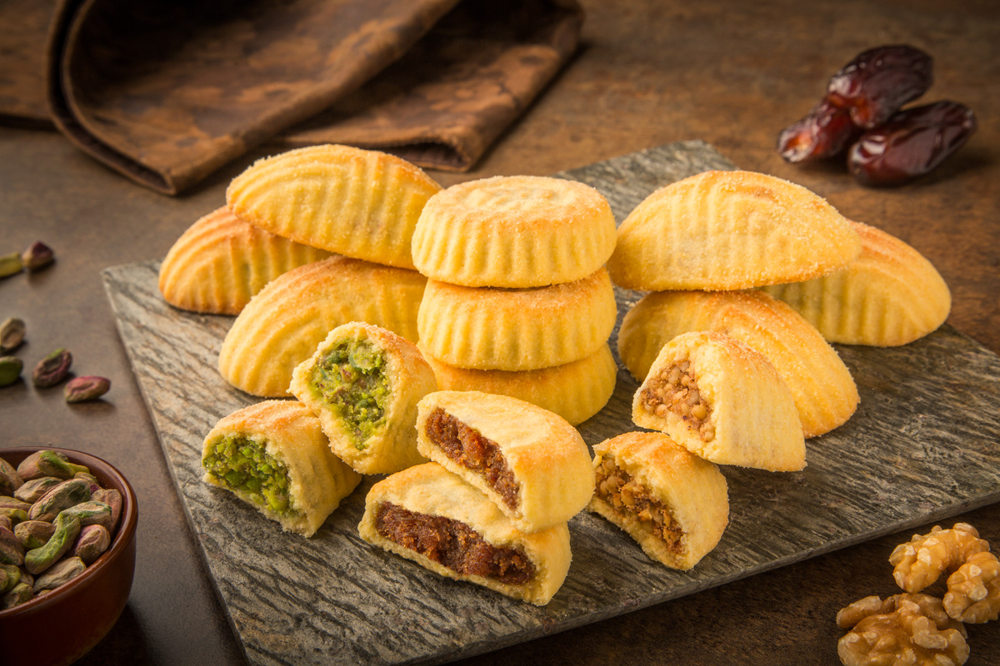
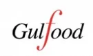

خدمات التصدير

ما بين أسواق أوروبا، آسيا، أمريكا و الوطن العربي
اتجهت شركة "أبوعوف" للتصدير إلى الأسواق العالمية، ما بين الأسواق الأوروبية والأسيوية والأمريكية بالإضافة إلى الأسواق العربية. اهتمت الشركة بمراعاة متطلبات كل سوق على حدة و تلبية احتياجات العملاء، و ذلك بالتواصل المستمر مع الأسواق الخارجية والتواجد بالمعارض العالمية. تمكنت شركة "أبوعوف" من الانتشار في الأسواق الخارجية والتي تضم مختلف الدول. وتسعى شركة "أبوعوف" للتوسع في باقي الأسواق.
رصيد ثقة كافي نتيجة نجاحنا مع شركائنا
ثقة عملاء شركة "أبو عوف" وتجاربهم المتميزة دفعتها إلى تلبية احتياجات السوق المتزايدة، لذلك لديهم الآن قسم خاص بتوريد الطلبات بكميات كبيرة للشركات وبتواجدها بأكبر عدد ممكن من الأماكن. لدى الشركة رصيد ثقة كافي نتيجة نجاحها مع شركاء متميزين في السوق المصري من فنادق، مطاعم، كافيهات، وشركات. لذا، لا تتردد في التواصل مع الشركة. لدى الشركة أيضا فريق متخصص في التعامل المهني Business to Business من حيث الالتزام بالمواعيد والحفاظ على جودة المنتجات والتغليف وطريقة العرض.

نصّدر الأصناف الأكثر طلباً في الأسواق العالمية





المشاركة بالمعارض الدولية
يسر شركة أبو عوف أن تعلن عن مشاركتها في أبرز المعارض الدولية، تشمل هذه المشاركة معرض جلفود في الفترة من عام 2020 حتى عام 2023، ومعرض انوجا في الفترة من عام 2017 حتى عام 2019، ومعرض سيال في عام 2018، بالإضافة إلى معرض الصين الدولي للاستيراد اكسبو في عام 2019. نحن نسعى لزيادة تواجدنا في المعارض القادمة لنكون أقرب إلى عملاء جدد ولنستمر في تحقيق أهدافنا وتقديم منتجاتنا المتميزة.